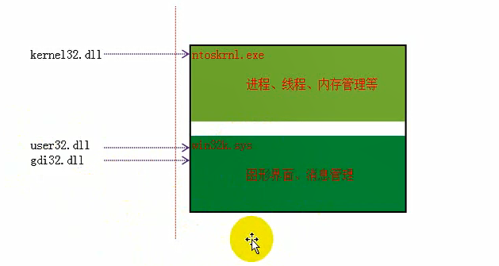
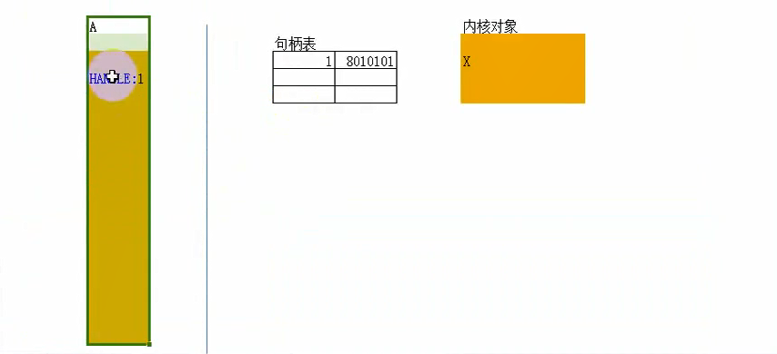
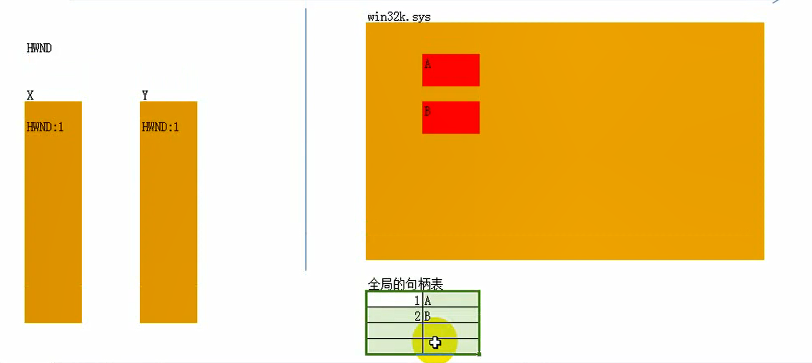
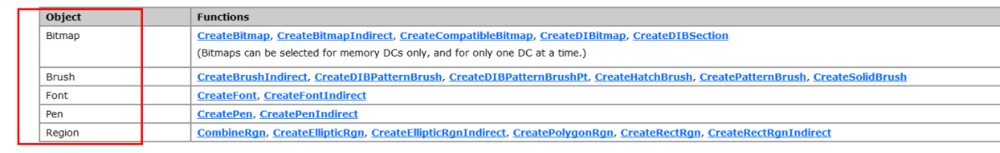
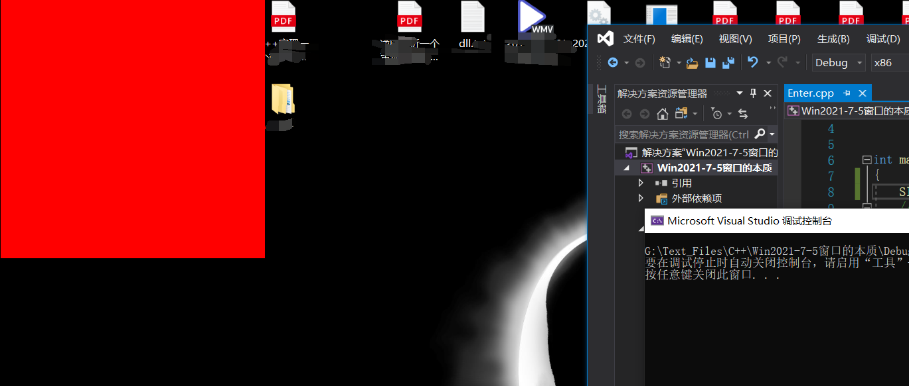

# 窗口的本质
在学习 Win32 的时候。很多操作都是窗口进行操作的。那么今天就说一下窗口的本质是什么.
窗口的本质是不断绘制。是 windows 通过消息机制进行绘制的.
我们知道内存分为高低 2G，其中低 2G 是给应用程序使用的而高 2G 是给操作系统使用的。
而我们画图形的操作都是操作系统通过底层的 win32k.sys 这个驱动来提供的.
进程跟线程管理是通过 ntoskrnl.exe 这个程序来管理的。
但是三环不能使用，所以提供接口给三环。分别是 kernel32.dll 跟 user32.dll gdi.dll

那么他们之间的区别是什么.
1.kernel32.dll 管理进程线程跟内存的一个 dll
2.user32.dll 窗口管理 图形界面管理
3.gdi.dll 自己绘制的的管理
# HWND 与全局句柄表

在进程线程那几节我们知道每一个进程中都有一个私有的句柄表，句柄的名字叫做 HANDLE 代表着一个索引，并对应着内核对象。
每个窗口的句柄在图形化编程中它不叫 HANDLE ，而叫 HWND ，窗口句柄表是 全局句柄表 。

所以在其他程序中也能使用这个句柄。
所有进程公用这个全局句柄表。
# GDI 图形设备接口 (Graphics Device Interface)
1. 设备对象（HWND）
2.DC 设备上下文（设备上下文，Device，Contexts）
3. 图形对象
# 设备对象是什么
简而言之设备对象的意思就是你要画图形要往哪里画。每一个窗口都有一个窗口句柄。而且是存放在全局窗口句柄表中的。我们可以获取一下。使用 Spy++ 获取.
# DC 设备上下文
DC 设备上下文其实就是这个窗口有一块内存是绘制用的。我们想要往这个窗口绘制。需要先绘制到这个内存中才可以。这块内存就称为 DC 上下文.
# 图形对象
图形对象就是指 画笔``画刷``位图 等等。我们要往内存中画的时候画的默认的，但是一般我们想改变一下形式，所以创建图形对象跟 DC 相关联。那么我们绘制就可以使用图形对象了。
# 绘制窗口步骤
绘制窗口免不了使用 API。但是使用之前。需要知道我们要操作的步骤.
获取窗口句柄。也就是设备对象。
获取窗口中的 DC 上下文。可以理解为获取指定窗口的绘图的那块内存。
创建图形对象。 要想绘制，那么首先就需要你自定义的一个绘制的东西才可以。比如你要写字，那么就必须得用图形对象字体，而不能用图形对象画笔。
关联图形对象跟 DC。 只要关联了。那么绘制的时候自动就使用你的图形对象了。
进行你的绘图操作。 这里就是你写的绘图代码了。
释放资源。 不管是窗口句柄也好，DC 也好，图形对象也好，都是内核对象，所以我们需要进行释放。
# 具体 API
- 获取指定窗口句柄
FindWindowA/FindWindowW
HWND FindWindowA( | |
LPCSTR lpClassName, 窗口类名.字符串. 可以用Spy++获取 | |
LPCSTR lpWindowName 窗口名称 | |
); | |
返回窗口句柄 |
- 获取 DC 设备上下文
GetDc()
HDC GetDC( | |
HWND hWnd 传入设备对象.也就是窗口句柄 | |
); |
- 创建图形对象
PS: 创建图形对象。图形对象有很多。有画笔。画刷。等等.
HPEN CreatePen( | |
int iStyle, // 创建笔的风格，意思就是你的画笔是实心的 还是虚线 还是其他. | |
int cWidth, // 笔的宽度。如果实心的。笔的宽度则自定义设置。如果其他。不能超过 1 | |
COLORREF color //RGB 的颜色。你的画笔是什么颜色的。是一串 16 进制可以在线取色 | |
); | |
返回图形对象 |
还有常用的。创建矩形区域.
HRGN CreateRectRgn( | |
int x1, | |
int y1, // 坐标 | |
int x2, | |
int y2 | |
); |
具体使用可以查询 MSDN:https://docs.microsoft.com/zh-cn/windows/desktop/gdi/windows-gdi 代码使用例子
如果你安装了 MSDN 2001 版本。搜索 SelectObject 可以看到。图形对象有很多。并且告诉你相应的 API

Bitmap 位图。后面是操作的 API
Brush 画刷
字体
笔
矩形
- 关联 DC 跟图形对象
HGDIOBJ SelectObject( HDC hdc, // handle to DC | |
HGDIOBJ hgdiobj // handle to object); |
- 写你想要绘制的代码
这里如果是画线。则用 LineTo(Hdc,x,y) 这个 API 给定一个 DC. 给个 x y 坐标。则可以绘制.
当然如果指定在哪里开始绘制则用 MoveToEx 指定起始位置.
BOOL MoveToEx( | |
HDC hdc, | |
int x, | |
int y, | |
LPPOINT lppt | |
); |
- 释放资源
释放资源很简单了，如果是图形对象，同一使用 DeleteObject(对象) 进行删除.
如果是 DC , 如果是创建的 DC , 则用 DeleteDc(DC对象) 来进行删除.
如果是获取的 DC 则用 ReleaseDc(Dc对象) 来进行删除.
题外话 windows 程序中还有一个 API. 可以获取 DC 中默认的图形对象.
// 该函数检索预定义的备用笔、刷子、字体或者调色板的句柄 | |
HGDIOBJ GetStockObject( | |
int fnObject // 对象的类型。你想从 DC 中获取什么对象类型. | |
); |
详情见百科 https://baike.baidu.com/item/GetStockObject
图像类型如果是 DC_BRUSH 则是获取纯色刷。就不用自己创建色刷了。可以通过操作色刷的 API 进行操作.
COLORREF SetDCBrushColor( | |
HDC hdc, // 设备上下文环境句柄。 | |
COLORREF color //RGB 颜色 | |
); |
# 绘制图形
# 实例代码
#include <iostream> | |
#include <Windows.h> | |
int main(int argc, char* argv[]) | |
{ | |
//1. 设备对象 就是你要把东西画在什么地方 | |
// 这里使用的是桌面的句柄 | |
HWND hwnd = (HWND)NULL; | |
//2.DC 设备上下文对象 | |
// 把它看成一块内存，画在内存中，然后再打印到屏幕上 | |
// 获取设备上下文对象 | |
HDC hdc = GetDC(hwnd); | |
//3. 图形对象 | |
// 获取默认画刷 DC_BRUSH 可以设置颜色 | |
HBRUSH hbrush = (HBRUSH)GetStockObject(DC_BRUSH); | |
//4. 关联 | |
SelectObject(hdc, hbrush); | |
//5. 开始画矩形 | |
// 设置画刷颜色 | |
SetDCBrushColor(hdc, RGB(0xFF, 0x00, 0x00)); | |
// 画矩形 | |
Rectangle(hdc, 0, 0, 400, 400); | |
//6. 销毁对象 释放资源 | |
DeleteObject(hbrush); | |
ReleaseDC(hwnd, hdc); | |
return 0; | |
} |

# Reference
https://www.cnblogs.com/iBinary/p/9580268.html